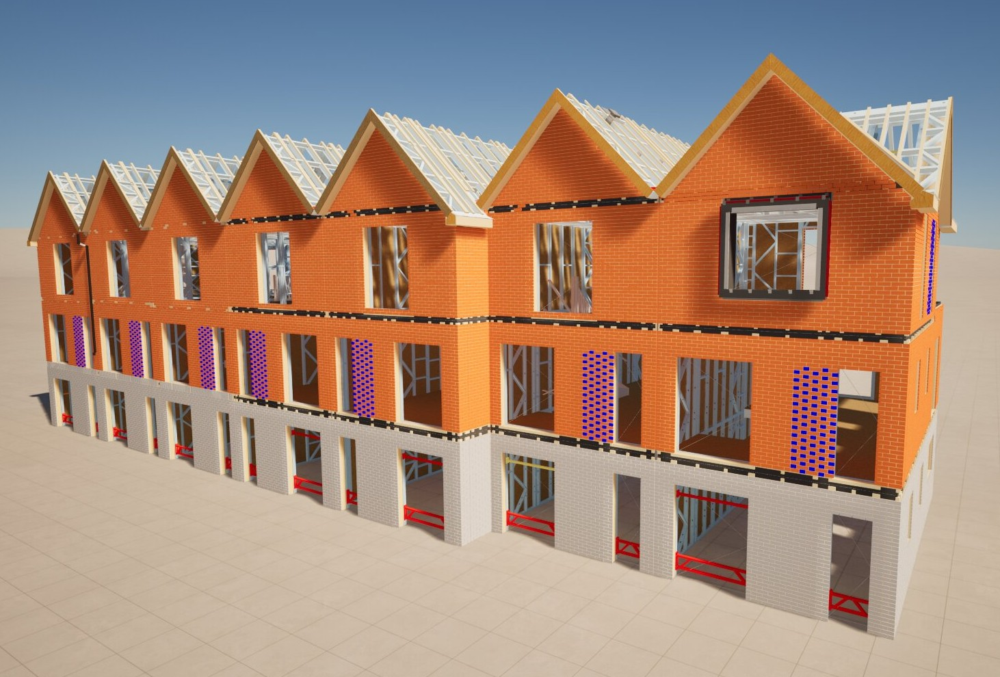
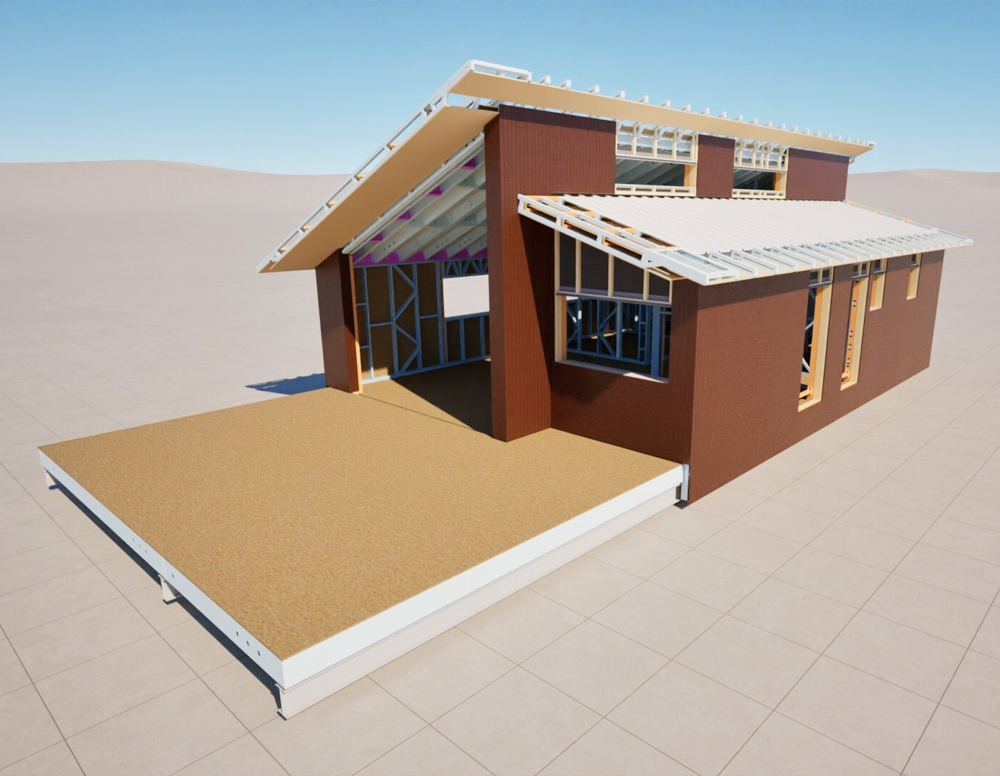

SELECTED WORK · TECHNICAL DESIGN · BIM
Technical Design
Projects
Selected professional projects demonstrating Revit-based modelling, technical design development, coordination and construction-focused information. Project imagery and information are presented selectively to respect confidentiality.

PROFESSIONAL · TECHNICAL DESIGN
Atherton Grove
Professional technical design and BIM work developed as part of my role at Starship, including design development, bespoke architectural interfaces and coordination of construction information.
View project →
PROFESSIONAL · TECHNICAL DESIGN
Sandbank Point
Revit-based modelling and technical coordination for 14 zero-carbon townhouses. Detailed block models and live sections helped coordinate complex material build-ups, resolve potential clashes and maintain the architect's design intent.
View project →
PROFESSIONAL · TECHNICAL DESIGN
Glentress Forest
Professional technical design and BIM experience presented through selected project imagery and non-confidential design information.
View project →PROFESSIONAL EXPERIENCE
Design information
developed for construction.
These projects form part of my professional experience at Starship. This portfolio presents selected renders, site photographs and Revit-based work while excluding confidential technical drawings, proprietary information and project-specific construction details.